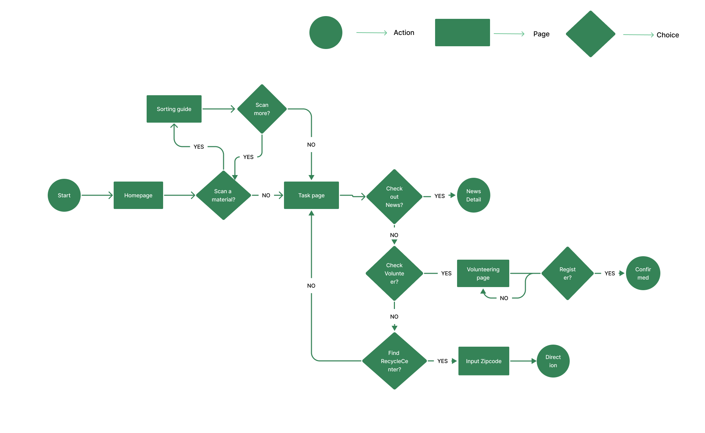

WasteFree
Due to a family visit to San Francisco, I spent a week in downtown SF. I noticed that the building where I was staying near Union Square, even has two separate trash chutes(recycle and waste), but I still can see people throwing to-go boxes in the waste chute. As Global Warming continues year after year. I think we need to figure out a way that helps people recycle better.
Project Duration
1 Month
Project Type
Conceptual,Google UX Deisgn Course Project
My Role
UX Design, Visual Design, Competitive Audit, User Research, Prototyping, Testing

Based on my experience, I came up with some hypotheses that why people don't recycle. What challenges do they face? What are the goals do I want to accomplish.
Challenges
- Sort waste is time-consuming.
- No one tells them whether they do it right or wrong.
Goals
- Educate people to recycle correctly.
Design Process

1. Empathize
With the above hypotheses in mind, I interviewed five people to better understand users' challenges. Interviees aging 22-46 years old are working in different fields and order to-go meals every week. They are my target users. The finding are shocking.
Key Findings: Click to check out the whole interview
- People who think recycling is easy but think they didn't do it right.
- People recycle materials based on their experience.
- People have a hard time telling if some materials are recyclable.

2. Define
According to the data I got from 5 people I interviewed. I defined the user problems and goals.
Problems Defined After User Research
- People have a hard time finding recycled information through recycling websites.
- People are overwhelmed by all the recycling information.
Goals Before User Research
- Educate people to recycle correctly
Goals After User Research
- Find an easier way to help people to sort waste.
- Encourage people to recycle better.

Competitive Audit
Most sustainability-related applications online right now such as iRecycle, Recycle Coach, Recycle! are focused on tracking recycling trucks and locating your nearby recycling bins. I dug into user's reviews from those competitor apps,and did a competitive analysis and found out the following:
Key Findings:
- Users think a reminder of recycling pick-up is a great touch but sometimes the reminder is not accurate.
- Users like the feature of "find nearby recycling center".
- There should have a sorting guide that users can search a specific material.
Some good features from competitors apps

Because the goal of the WasteFree app is to find an easier way to help people to sort waste and to educate people to recycle better. I combined users goals and competitive audit, accumulating the core features of my app:
- Scan to sort waste: Save users time to figure out which material is recyclable without scanning through all sorting guide.
- Save scanned results: Reinforce users to memorize the material next time.
- Nearby Waste Disposable Center: Helps user to locate the recycling center and give directions on specific maps.
- Recycling news: Helps users improve their sustainability and recycling rate.
- Volunteering opportunity: Connects users with others to learn and recycle better in the future.
3. Ideate
To refine core features in Wastefree app, I used the Design Sprint method "Crazy Eight" to fast sketch 8 wireframes.


Wireframes
User Flow
Based on the core features above, below is the user flow when users interact with each feature. Tasks include: User gets sorting guide by scan a material, User checks out articles (News), User registers a volunteering event, User finds a recycling center.
Wireframe Highlights Click here to see wireframe prototype

Big and Clear "Scan" button, easy to get users' attention.

Bookmark icon can remind Users to save searched results to their account

Search bar in helping users to find nearby disposal center easily

Search bar in Volunteer opportunities page letting users clearly and exactly pick what categories of volunteering works they would like to help
Usability Testing:
I interviewed the same 5 people to test out the wireframes. I interviewed each person and gave them tasks to see how their interaction with the wireframe. Most of the interviewees think the navigation is clear, one of them think there are too much information on the homepage which is distracting. Here are some key findings during the interview:
Key Changes: Click to check out the whole interview
- I removed all distracting information and moved the menu from the bottom to the top left corner. Makes the landing page clean and clear.
- Since users only scan materials when they are not sure which material is recyclable, the "Similar Materials" feature is unnecessary, so I removed it to keep the app simple.
- During User interview, 3 users wish to add registered volunteering events to user account, so that I added "Registered Volunteering" under my account.
4. Prototype (Color Palette & Typography)
Moodboard & Color Palette: I picked a couple of words that can express the meaning of eco-friendly to create my moodboard. Words such as Green, Minimalism, Recycle, Sustainable, Earth, Planet.

For Typeface, I chose Futura and DIN Condensed for their simplicity, classicism and modernity.

Onboarding: High-fidelity Prototype

Mockups(Video)
5. Testing:
I conducted a interview to test the low-fidelity prototype which is the wireframe, Key changes I pulled together above Stage 4 Prototype.
Next Steps
Since I create this project based on my personal experience and my target audiences are very specific(people would like to recycle better), but to help realistic global warming problem, I need to expand the range of my target audience, next step, I'll conduct another usability test and expand the range of my interviewees to see if this idea can reach more people's needs.
What I learned
This is a very exciting application for me because I think recycling is a real issue we need to solve. This project helped me realize First, what a designer think is not what users think. Second, Sometimes what users say is not what they think. So when I was doing user interviews, I observed how users interact with the app with given tasks, and I asked how they feel when finishing each task. For the final design, I combined both results from those interviews to refine users centered application.